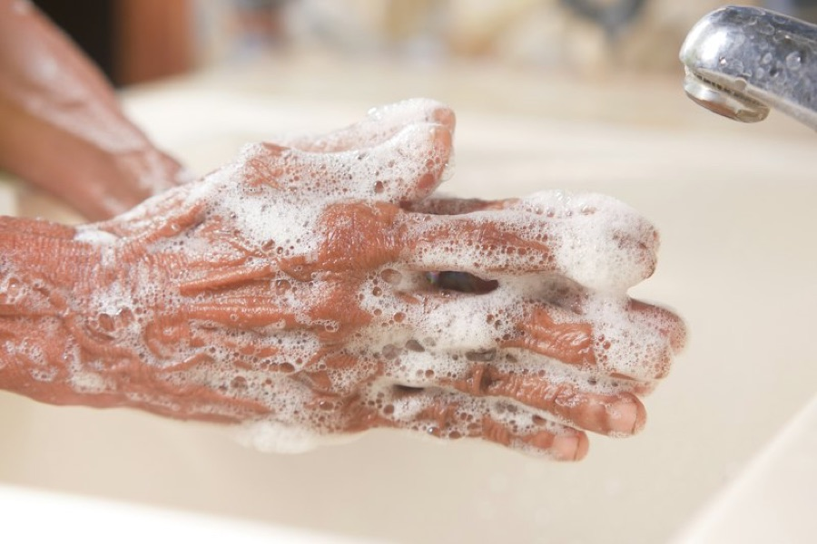

Search for "how to stop limescale" and you'll quickly find two camps. One says you need a water softener. The other says a scale reducer does the job for a fraction of the price. Both have a point, which is why it gets confusing.
We fit softeners, so you might expect us to be biased. We'll do our best to be fair, because the right answer genuinely depends on what you want. Here's how each one works, what it can and can't do, and how to choose.
How a water softener works
A water softener takes the hardness out of your water. Inside is a tank of resin beads that catch calcium and magnesium as water flows through, swapping them for sodium. Every so often the softener recharges the beads with brine made from salt.
The key thing is that the minerals that cause limescale are actually removed. The water coming out is soft, and you can test it with a strip and see the difference. That's why a softener affects everything downstream: no new scale on taps and screens, in kettles, showers and boilers, and the soft-water feel when you wash.
How scale reducers work
"Scale reducer" covers a few quite different technologies. What they have in common is that most don't take the calcium and magnesium out of the water. Instead, they aim to change how those minerals behave so they're less likely to stick as hard scale. The main types:
- Polyphosphate dosing. A small cartridge releases a food-safe chemical that helps keep minerals dissolved so they're less likely to form scale when heated. These are often fitted on the cold feed to a combi boiler and need refilling or replacing periodically.
- Electrolytic. Small inline units, commonly fitted to protect a boiler, that release tiny amounts of zinc into the water to affect how scale crystals form.
- Magnetic and electronic. Magnets clamped to or fitted in the pipe, or units that wrap a coil around the pipe and send signals through it. The idea is to alter how scale forms as water passes.
- Template-assisted crystallisation (TAC). Water passes through a special media that encourages minerals to form tiny crystals that stay suspended rather than sticking to surfaces.
How well these work depends on the type, the water, how hot it gets and how it's installed. Some have more independent evidence behind them than others, and results reported by users are mixed. That doesn't make them useless. It just means it's worth being clear about what you're buying and what to expect.
Side by side
Limescale on taps, screens and tiles
A softener stops new scale forming, so the difference is very visible. Most scale reducers are aimed at protecting heated parts like boilers and hot water systems, and you'll often still see water marks and some scale on taps and glass.
Boilers and appliances
Both can help protect a boiler. Scale reducers are commonly fitted for exactly this, and boiler installers often fit one as standard when they put in a new boiler. A softener protects the boiler as well as everything else in the house that uses hot water. Our post on limescale and your boiler goes into more detail.
Soap, skin and laundry
This is where softeners stand apart. Because the minerals are removed, soap and shampoo lather properly and rinse off cleanly, and you'll typically use less detergent. Scale reducers don't change the water's hardness, so you won't get that soft-water feel.
Drinking water
Softening adds sodium, so we always fit a separate unsoftened tap for drinking and cooking with a softener. Most scale reducers don't add sodium, so this isn't a concern in the same way, though polyphosphate units should only be used where the manufacturer says the water is fine to drink. Our post on drinking softened water explains the sodium side.
Cost and upkeep
Scale reducers are generally cheaper to buy and run. Some need nothing at all, while others need a cartridge or part replacing from time to time. A softener costs more upfront, needs salt topping up, uses some water when it regenerates and benefits from a yearly service. Our guide to softener running costs breaks that down.
Space and plumbing
Most scale reducers are small and fit inline on a pipe. A softener needs a bit of cupboard space on the incoming mains, a drain and, for electric models, a socket.
So which should you choose?
Here's our honest take.
A scale reducer might be enough if your main concern is protecting a new boiler, you're renting or short on space, or you're working to a tight budget and you're happy to keep wiping taps and descaling the kettle.
A water softener makes more sense if you want limescale gone from the whole house, you're fed up with cleaning shower screens, you want soap and shampoo to lather properly, and you'd like your boiler and appliances protected too. In hard-water areas like most of London, that's what a lot of people are after.
Some homes have both: a scale reducer the boiler installer fitted years ago, and a softener added later. That's fine. Just let your heating engineer know when they next visit.
Not sure how hard your water is? Our postcode checker gives a rough idea (check with your supplier for exact figures). And if you'd like to see what a softener would involve in your home, our installation page explains the free survey and how we quote. Already got one that's not performing? Our servicing team can help.
Quick answers
What's the difference between a water softener and a scale reducer?
A water softener removes the calcium and magnesium that cause limescale. Most scale reducers leave those minerals in the water and aim to change how they behave so they're less likely to form hard scale.
Do scale reducers really work?
It depends on the type, your water and how it's used. Some are widely used to protect boilers. They don't soften water, so you won't get the soft-water feel, and you'll usually still see some scale on taps and glass.
Can I drink water from a scale reducer?
Most scale reducers don't add sodium. For polyphosphate types, check the manufacturer confirms the treated water is suitable for drinking.
Want a hand with your water?
Book a free survey and water test. We'll tell you straight whether a softener's worth it for your home.
Get a free quote